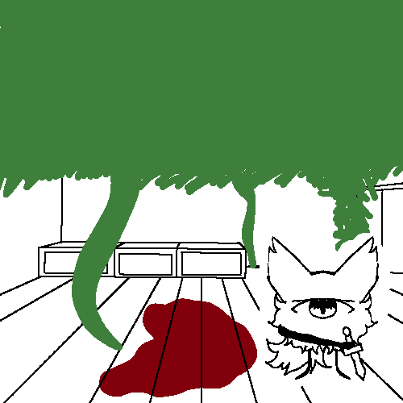

Chapter 1

The Kaietica also seem to be incredibly intelligent and hold no hostility towards humans. They've crafted societies for eons - note the "eons part" as its only been decades on Earth. They also seem to be inherently rooted in tribalism as they have multifaceted clans within their species. Despite this however, they tend to worship a singular gem (see log -- for more info.) in a sunlit cave.
Log end.